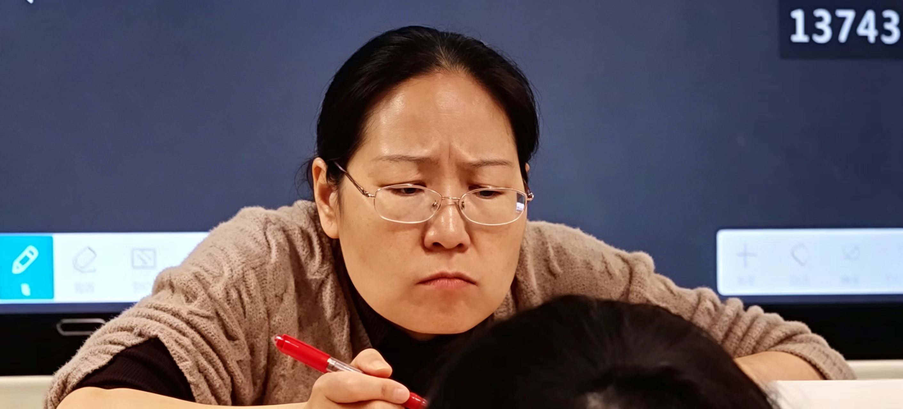
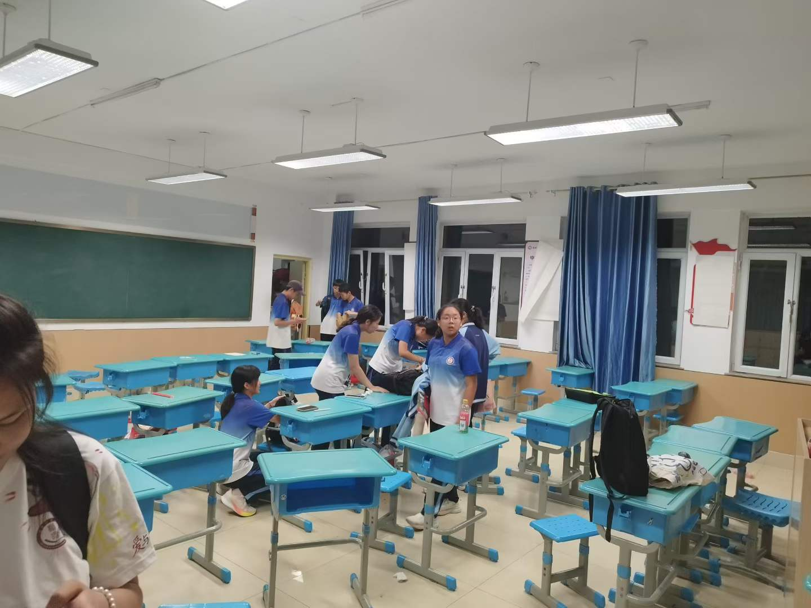
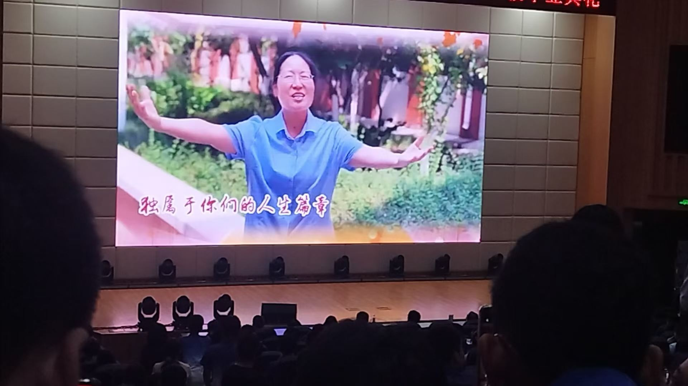
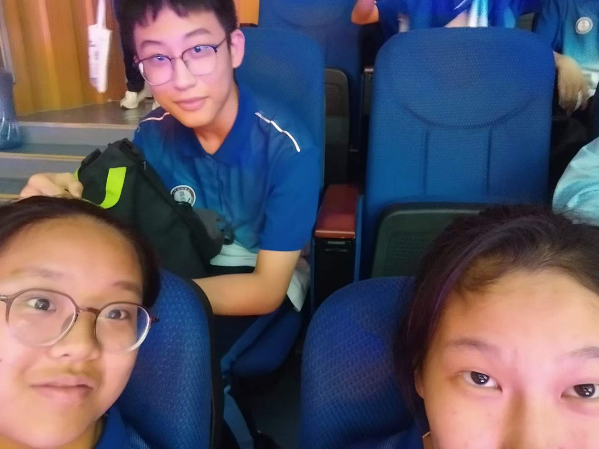
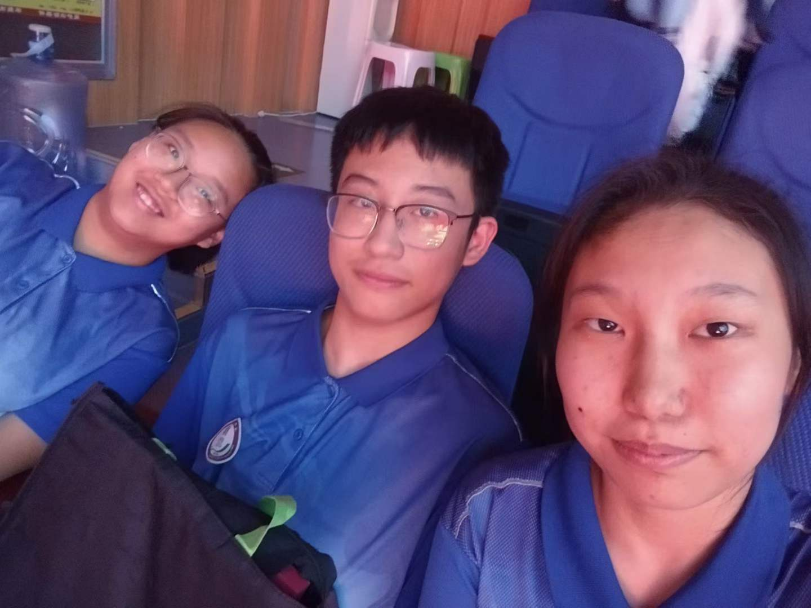

如您所见，这是一封十分不正经的信！既然要不正经那就从格式开始，问候落款我就先丢掉了。
本信由您亲爱的两个课代表合谋，由张允旭倾情提供技术支持，两人均认为一定要给您留下一个难忘的毕业纪念。
信由我主写，所以还是想先说些我的心里话。初三您刚来带我们，那时候真是感觉天都要塌了，甚至心里都在想：这两年要怎么熬啊！被选上课代表真是太绝望了！但是，改观来得奇怪也轻悄。
“The poorer he is, the happier he will be.”（大概是这样的话吧，具体的句子不记得了，不要毕业了再给我挑出个错处来就好！）“他越穷，他就越开心，所以他就是‘穷开心’！”然后，全班寂静。“你们都不懂我的幽默，那以后不讲了。”我大概也没懂您的幽默，可是反应过来之后，我发现我的心在狂跳，为什么呢？因为我是大张伟粉丝！好吧开个玩笑，我确实是大张伟粉丝，不过肯定不是因为这个。因为那一刻，我突然觉得，眼前的这个人变得和印象里不一样了。眼前的人会上课抖个机灵，然后因为无人回应而作出“以后不给你们抖了！”的反应。我觉得，我好像还是不够了解您。
我想从那以后，我心里对您的可怕滤镜就碎掉了。我开始留意更多您的事。不知道什么时候一个课间，具体怎么把我叫去，给我下了任务已经不记得了，但是当时说的那句话依旧清清楚楚：“那几个课代表下课都找不着人，我只能抓你来了。”很普通平常的一句话，但是为什么我记到了现在，大概是因为那一个“抓”，好像您知道我心里在想什么。现在想想，不管是“能够猜到我心里在想什么”还是“会和我想到一样的事”，确实都有理由拉近我们的距离，事实也确实如此。
咱说这信也不能变成回忆大会，具体的细节也不说那么多！其实例子还有很多，比如王煜鑫去您办公室借电话时您对其他老师说的“这应该是我们班唯一的正常人了”，比如您课间跑去学校里挖野菜，然后问我们吃不吃，比如……我其实觉得您上课虽然感觉上一板一眼的，但总会说一些，嗯，有趣的词汇？那种，这么用好像合理又不合理，总之不常这么用的表达。听见大家哄堂大笑，有时我也会想，这是不是代表着宋老师其实也是个很幽默的人？
有了这样的印象，再觉得您温柔那便是顺理成章的事情了。我们帮您干了活您会给吃的，会帮着分析我们的总成绩，会指导我们要怎么学，要立目标什么的，当然也包括上面的“挖野菜”事件等等。但如果带着对您的严肃的滤镜，那我可能就不会在意到这些。那节课多么不值一提，也许老师您也已经忘记，但现在看，简直堪比“二战转折点”！
不过当然，以上都是我的臆测！我仍不了解您究竟是个怎样的人，但在我心里，您也绝不只是一个严格刻板的人。话似乎也就那么多了，至于另外一个主谋张允旭为什么不来说点，他的原话是：“那种深情（重读）的话我也写不来啊”。不过，在我告诉他我写了一千多字之后，他似乎临时改变了主意，紧急求助AI去了，至于最后会不会自己写或者直接套上一篇，啊呀，谁知道呢！（坏心眼）但也确实，工作是两边同步进行的，我也不知道他准备的怎么样呢。
我看看……嗯，这封信应该还算是很不正经了，首尾呼应，挺好！看完这个，没准您也会对您的课代表了解的多一些呢，“这才是她课代表的风格嘛。”这也是张允旭原话。哦对了，除了技术支持和不知道弄得如何的发言意外，末尾图片亦由张允旭同学倾情提供！不过依照计划，我们现在应该已经跑路啦！
至于告别的话，祝福的话……为您点上一首《永远唱不完的歌》，就当是庆祝我们因《穷开心》的结缘啦！
提笔写这封信的时候，我突然意识到，我不用天天往办公室跑了。
呃好吧，这确实是一件让人高兴的事……吧，对，绝对是！回想起这两年的时光，如果用一个字来概括的话，我觉得“载”最合适：
载，是承载。这两年里，承载了太多日常点滴。无论是听写前赶忙读上几遍，试图用瞬时记忆蒙混过关的“临时抱佛脚”，还是三五个人从文印室出来，怀里承载的一摞摞厚重试卷……一件件细碎小事堆叠起来，填满了这两年的朝夕。
而载，又可以是满载。不必说“定位会看”、“根据题干答题”的阅读答题技巧，也不必说make作为使役动词，变为被动语态要补to的语法要点，单单是您课上总挂在嘴边的那句 “抬眼皮”，还有无数次温柔的叮嘱与包容，全都满满满载在我的回忆里。想起一个词，叫“满载而归”，我觉得这个词啊，用在毕业是非常合适啊。毕业了嘛，不得把满载的知识全都归还给老师嘛，满载而归。不归还下一届老师也没法教嘛。
祝福的话，您亲爱的胡昕怡同志已经借一首温柔治愈的《永远唱不完的歌》尽数诉说。那我便顺着大张伟的歌声，让这首名为“毕业”的歌，就此落下尾声！





二〇二六年，英語課代表參加畢業典禮合影留念。
從左到右依次為：张瀚文，张允旭，胡昕怡
（点击图片可以下载）
{kind=link}
{kind=link}
{kind=link}
{kind=link}
{kind=link}
{kind=link}